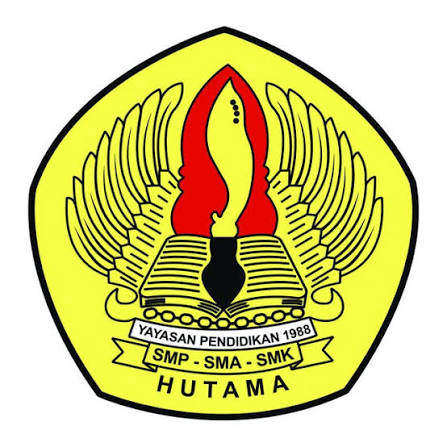

Visi
Menjadi sekolah kejuruan pilihan utama yang menghasilkan lulusan berakhlak mulia, kompeten, dan adaptif terhadap teknologi.
Sekolah kejuruan yang menyiapkan lulusan siap kerja, siap usaha, dan siap berkembang bersama teknologi.

Kami mendidik siswa-siswi tidak hanya menguasai teori, tetapi juga memiliki keterampilan praktis yang siap bersaing di dunia kerja maupun berwirausaha mandiri.
Menjadi sekolah kejuruan pilihan utama yang menghasilkan lulusan berakhlak mulia, kompeten, dan adaptif terhadap teknologi.
Menyelenggarakan pembelajaran berbasis praktik industri, meningkatkan kompetensi guru, serta memperluas jaringan kerja sama dunia usaha.
Lima jurusan dengan praktik langsung, dari jaringan komputer sampai siaran.
Belajar merakit dan memperbaiki komputer, membangun jaringan, mengelola server, dan menjaga keamanan data.
Belajar merawat, mendiagnosis, dan memperbaiki mesin, kelistrikan, serta sistem kendaraan roda empat.
Belajar administrasi, pengarsipan, korespondensi, layanan prima, dan penggunaan aplikasi perkantoran.
Belajar mencatat transaksi, menyusun laporan keuangan, mengelola pajak, dan memakai software akuntansi.
Belajar produksi video dan audio, penyiaran, fotografi, penyuntingan, serta pembuatan konten kreatif.
Penerimaan Peserta Didik Baru SMKS HUTAMA. Daftar sekarang dan pilih jurusan yang sesuai dengan minatmu.
Jadwal: [32 Februari 2027]
Lokasi pendaftaran: Jl. Raya Hankam No. 37, Pondok Gede, Kota Bekasi
Kontak: 0812-3456-7890 (WhatsApp)